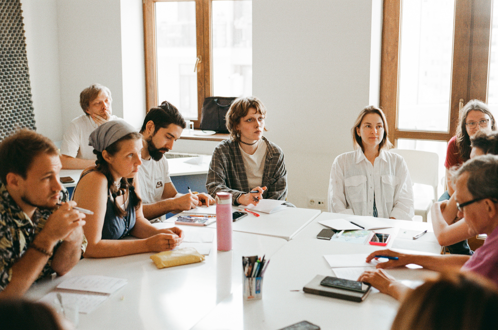

one good teacher can shape hundreds of children, but...
Drag an app to move it. Click or press Enter to dismiss it and show the next app.
kids today are growing up inside an economy engineered to consume their attention. Wars. COVID. Zoom classes.
Schools were never designed to handle that. Our foundation is here to help.

Our first pilot in Tbilisi, Georgia. July 2026
The Foundation runs programs for teachers and coordinators, with mentors and funding built in.Yes, a monthly stipend
More than half of every program is practice. Each starts with an intensive and moves quickly into practical work: teachers lead lessons with children, while coordinators bring real situations from their schools and work through them together. A mentor stays with the group throughout.
We use approaches we trust and that have been well studied, such as inquiry-based learning, activity-based learning, and project work. We don’t have a new pedagogy to sell.
The test is simple: does it still work in a regular class of 35 on a Tuesday morning?
You see the effects of years of classroom disruption better than anyone. We want to give you time to learn, try things out, and work through what happens in the classroom with a mentor.
We start with the later years of primary school and the beginning of middle school — when many children begin to lose interest in learning.
Specific teaching practices
Intensives where we take practical teaching methods apart, try them, and see what happens.
“how do you get a class’s attention without raising your voice?”“how do you build motivation that doesn’t depend on grades?”“how do you start a lesson with a real question?”“how do you get children to look for answers themselves instead of trying to guess what the teacher wants to hear?”
Practice with children
After the intensive, participants spend several weeks teaching children and go over their lessons with a mentor every week. The point is to bring what they learn back to their own classrooms.
A stipend for your time
You have more than enough work without us, so we pay participants a stipend for both the training and the practice with children. If we believe a teacher’s time matters, it makes sense to act like it.
17teachers finished the intensive, July–August 2026
8.8→9.5average recommendation score, after the intensive → after practice
40→81%of answers on the fundamentals at “I understand it and can use it”
60→25%worried about adapting when a lesson goes off plan
Our first intensive in Tbilisi focused on inquiry-based education. We surveyed teachers after the intensive and again after several weeks of teaching children with weekly mentoring.
Practice made a visible difference. On the fundamentals — what an inquiry lesson is for, how it differs from a merely engaging one, and what the teacher does — the share of answers at “I understand and can use it” rose from 40% to 81%. Teachers also became much less worried about having to adapt when a lesson went off plan.
“I’ve become noticeably less inclined to steer children toward the right answer, and more attentive to how they reason.”
One of the teachers · that’s the change we’re looking for
Not everything became easier. Group dynamics remained difficult, and we’re adding more practice and mentoring around it.
Three-quarters of the children surveyed said they would like lessons like these at school.
Encouraging results, but still from a small, unusually friendly setting, compared cohort to cohort. We’ll see how they hold up in regular classrooms.
Strong teachers need schools where they can do good work and want to stay. That’s why we work with teachers at more than one level: in their own classrooms and in the teams they help lead.
Our first program for coordinators is being developed together with rakazim themselves. The first pilot is under way with a closed cohort.
Leading without formal authority
Rakazim are teachers too. They teach their own classes and help a whole team work better, often without formal authority over the people they lead. How do you move a team forward when the people in it don’t report to you?
Feedback that actually helps
How do you give feedback that people can use, support colleagues, and help them grow? Participants bring real situations from their schools and work through them together with a mentor.
Making room for the work that matters
How do you distribute the workload across the team and still make time for professional growth — yours and your colleagues’? The program also covers the practical systems and projects that keep a department running without letting coordination take over the time meant for teaching.
Interested in bringing a program to your school or municipality?
Tell us a little about your school and what you need. We’re looking for participants and places to practice, not just funding.
Let’s talk
People behind Morim
We’ve spent years working in education. Now we’re building Morim together.
Former CEO of Gradarius; previously CTO and Head of Informatika at Yandex Education. 13+ years in EdTech in the US and the CIS.
The team
We bring together teacher-development specialists and practicing teachers. We’re also building a circle of experienced Israeli educators and researchers who can tell us when we’re wrong and help us understand the school system from the inside.
FAQ
Who is the Fellowship for?
›
We currently focus on practicing teachers in the later years of primary school and the beginning of middle school. If you work with another age group, you can still get in touch and tell us about your experience.
What about AI?
›
We teach teachers to use AI — and to teach children how to use it — instead of training AI to replace teachers.
How is the program structured?
›
Theory and workshops are mixed with practice throughout. Teachers work with children; coordinators bring real situations from their schools. Both meet in small groups with a mentor every week.
Do participants receive a stipend?
›
Yes. We pay participants for the training and the subsequent practice with children. The amount and payment arrangements will be provided with the details of each program.
Can a school or municipality work with Morim?
›
Yes. We’re interested in working with schools, networks, and municipalities that want to bring our programs to their teachers or coordinators. We’re also looking for experienced educators who can help us build the programs.